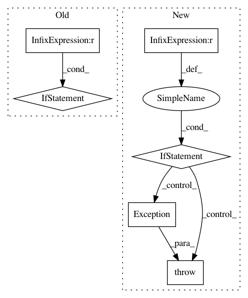

1bddafd3102e4e0841d78673581c3ead8f68a7c8,dataproc/submit_job_to_cluster.py,,wait_for_job,#,174
Before Change
region=region,
jobId=job_id).execute()
// Handle exceptions
if result["status"]["state"] == "ERROR":
raise Exception(result["status"]["details"])
elif result["status"]["state"] == "DONE":
print("Job finished.")
return result
// [END dataproc_wait]
// [START dataproc_get_client]
def get_client():
Builds an http client authenticated with the service account
credentials.
dataproc = googleapiclient.discovery.build("dataproc", "v1")
After Change
while True:
job = dataproc.get_job(project, region, job_id)
// Handle exceptions
if job.status.State.Name(job.status.state) == "ERROR":
raise Exception(job.status.details)
elif job.status.State.Name(job.status.state) == "DONE":
print("Job finished.")
return job
// [END dataproc_wait]
def main(project_id,
zone,
cluster_name,
bucket_name,
In pattern: SUPERPATTERN
Frequency: 4
Non-data size: 6
Instances
Project Name: GoogleCloudPlatform/python-docs-samples
Commit Name: 1bddafd3102e4e0841d78673581c3ead8f68a7c8
Time: 2019-05-20
Author: amancuso@google.com
File Name: dataproc/submit_job_to_cluster.py
Class Name:
Method Name: wait_for_job
Project Name: pysb/pysb
Commit Name: b20275d6dd7c505a166a8bc5f3b8bcf87a09e707
Time: 2015-02-23
Author: lh64@cornell.edu
File Name: pysb/tools/pysb2gillespy.py
Class Name:
Method Name: _translate_parameters
Project Name: Esri/raster-functions
Commit Name: b171c97f2974ef3f884ad9674de137eda7023875
Time: 2015-03-01
Author: akferoz@esri.com
File Name: functions/LinearSpectralUnmixing.py
Class Name: LinearSpectralUnmixing
Method Name: updateRasterInfo
Project Name: Esri/raster-functions
Commit Name: 187140c0d694b144a4ec81553eb2d40bb0df453e
Time: 2015-03-07
Author: akferoz@esri.com
File Name: functions/LinearSpectralUnmixing.py
Class Name: LinearSpectralUnmixing
Method Name: updateRasterInfo